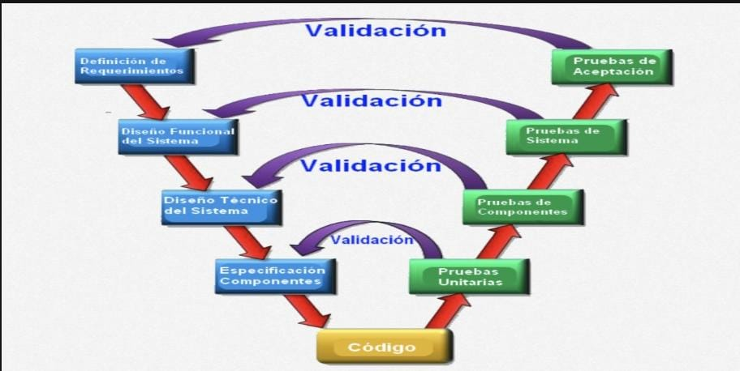
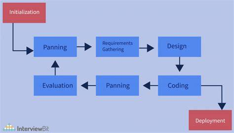
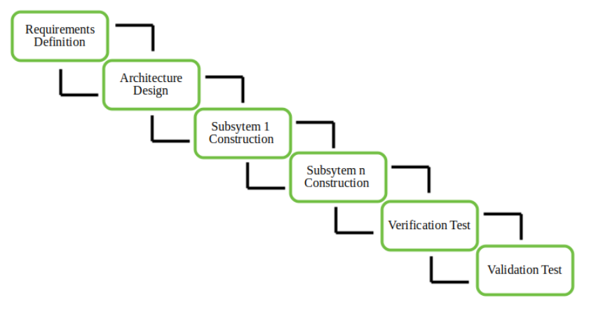
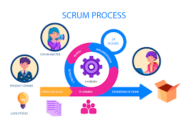
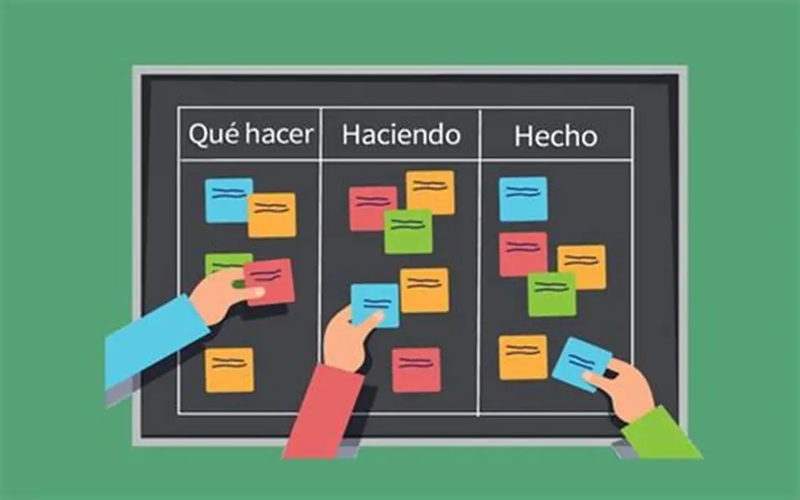

Procesos de desarrollo de software
Indice
Los procesos de desarrollo de software son fundamentales para la creación exitosa de aplicaciones y programas informáticos. Estos procesos incluyen la planificación, diseño, codificación, pruebas y mantenimiento del software. Cada etapa del ciclo de vida del desarrollo de software (SDLC) tiene un objetivo específico y es crucial para la entrega de soluciones tecnológicas efectivas y de calidad.
Ciclo de Vida del Desarrollo de Software (SDLC)
El SDLC (Software Development Life Cycle) es un proceso sistemático y estructurado que guía la creación, implementación y mantenimiento de un sistema de software, desde su concepción inicial hasta su retiro definitivo. Este ciclo permite desarrollar productos de software de alta calidad, cumpliendo con los requisitos del cliente, los plazos establecidos y los recursos disponibles. El SDLC se compone de varias fases interrelacionadas, que pueden repetirse en forma iterativa dependiendo del modelo de desarrollo que se utilice (como cascada, ágil, espiral, etc.). Las principales etapas del SDLC son:
Fundamentos Conceptos base
1. Análisis de Requisitos
En esta fase se recopila, analiza y documenta la información necesaria para entender qué necesita el cliente o usuario final. Se identifican los objetivos del sistema, las funciones que debe cumplir y las restricciones técnicas o legales. Un correcto análisis de requisitos es fundamental para evitar errores costosos en etapas posteriores.
2. Diseño del Sistema
A partir de los requisitos, se define la arquitectura del software y se detallan los componentes técnicos necesarios. Esto incluye el diseño de la base de datos, la interfaz de usuario, los módulos del sistema y la estructura general. El objetivo es tener una guía clara para la posterior etapa de codificación.
3. Implementación (o Desarrollo)
En esta etapa, los desarrolladores escriben el código fuente del sistema utilizando los lenguajes de programación y herramientas definidas previamente. El diseño técnico se convierte en un producto funcional. Es común que se trabaje por módulos o versiones parciales que luego se integran.
4. Pruebas (Testing)
Una vez desarrollado el software, se realizan pruebas para garantizar que cumple con los requisitos establecidos. Se revisa su funcionalidad, rendimiento, seguridad y usabilidad, identificando y corrigiendo errores o defectos antes de su implementación final. Las pruebas pueden incluir pruebas unitarias, de integración, de sistema y de aceptación.
5. Despliegue (Deploy)
Después de superar las pruebas, el software se implementa en el entorno de producción para que pueda ser utilizado por los usuarios finales. Este proceso puede hacerse de forma gradual (por fases o versiones) o total, y debe estar acompañado de capacitación, documentación y soporte inicial.
6. Mantenimiento
El software continúa siendo evaluado y ajustado durante su vida útil. Esta fase incluye la corrección de errores no detectados previamente, actualizaciones para adaptarse a nuevos requerimientos o entornos tecnológicos, y mejoras funcionales que surjan con el tiempo. El mantenimiento garantiza la vigencia y eficiencia del sistema a largo plazo.
Metodologias
Modelo Cascada
El modelo de cascada es un método de gestión de proyectos que se caracteriza por ser lineal y secuencial. Este modelo divide el proyecto en distintas fases que deben completarse antes de pasar a la siguiente, incluyendo etapas como Análisis, Diseño, Implementación, Pruebas y Mantenimiento. Fue propuesto originalmente por el Dr. Winston W. Royce en 1970 para el desarrollo de software y se utiliza ampliamente en la gestión de proyectos. Aunque es un enfoque estructurado, ha recibido críticas por ser considerado obsoleto en algunos contextos modernos.

VENTAJAS
·Detección temprana de errores gracias a pruebas continuas.
·Calidad asegurada: cada componente verificado según sus requisitos.
·Estructura definida: marco claro de verificación y validación.
DESVENTAJAS
· Poca flexibilidad, similar al modelo cascada.
·Requiere planificación exhaustiva de pruebas.
·Mantiene la secuencialidad estricta del enfoque lineal.
Modelo en V
El modelo en V es una metodología de gestión de proyectos que se utiliza en el desarrollo de software y en la gestión de tecnologías de la información y comunicación (TIC). Este modelo se caracteriza por su estructura en forma de V, que representa un proceso de desarrollo que incluye fases de análisis de requisitos, diseño, implementación y verificación. El modelo en V se utiliza para garantizar la calidad del software y se basa en la verificación y validación a lo largo de todo el ciclo de vida del desarrollo.

VENTAJAS
·Detección temprana de errores gracias a pruebas continuas.
·Calidad asegurada: cada componente verificado según sus requisitos.
·Estructura definida: marco claro de verificación y validación.
DESVENTAJAS
·Poca flexibilidad, similar al modelo cascada.
·Requiere planificación exhaustiva de pruebas.
·Mantiene la secuencialidad estricta del enfoque lineal.
Modelo Interactivo
El modelo interactivo permite desarrollar software en ciclos cortos y manejables, entregando versiones incrementales que son validadas por el cliente. Esta retroalimentación continua asegura que el producto se ajuste mejor a las necesidades reales, minimizando errores y adaptándose a cambios. Aunque requiere una planificación cuidadosa y control sobre el alcance, es ideal para proyectos donde los requisitos pueden evolucionar o no están completamente definidos desde el principio.

VENTAJAS
·Gestión de riesgos: fácil identificar problemas tempranamente.
·Flexibilidad: los requisitos pueden cambiar entre iteraciones.
·Feedback temprano: el cliente ve progreso desde las primeras etapas.
·Adaptabilidad: ajustes basados en aprendizaje continuo.
DESVENTAJAS
· Objetivos cambiantes pueden alterar el rumbo del proyecto..
·Planificación de recursos a largo plazo puede complicarse.
·Complejidad de gestión: coordinación entre iteraciones necesarias.
Modelo Incremental
El modelo incremental permite desarrollar software de manera gradual, entregando valor desde etapas tempranas, ajustándose al feedback del cliente y permitiendo mayor adaptabilidad. Es especialmente útil en proyectos donde los requisitos pueden cambiar o donde es importante lanzar funcionalidades clave lo antes posible. Sin embargo, requiere una buena planificación, integración estructural y un equipo competente para manejar la complejidad.

VENTAJAS
.El software se entrega en partes utilizables desde el inicio.
·Se priorizan funcionalidades clave primero.
·Facilita pruebas y corrección por etapas.
·Acepta modificaciones en incrementos futuros.
DESVENTAJAS
·Requiere una arquitectura bien diseñada desde el principio.
·Puede ser difícil integrar módulos si no hay buena coordinación.
·Aumenta la complejidad si los incrementos no son bien planificados.
·El cliente puede malinterpretar el software incompleto como el producto final.
Metodologias
Scrum
Scrum es un marco de trabajo ágil usado para desarrollar productos de forma iterativa e incremental. Se enfoca en equipos pequeños, autoorganizados y multifuncionales que trabajan en sprints (ciclos de 1 a 4 semanas). Su meta es entregar valor al cliente rápidamente y adaptarse a cambios constantes.

ROLES
·Product Owner (Dueño del Producto): Define y prioriza funcionalidades según el valor de negocio.
·Scrum Master: Facilita el equipo, elimina impedimentos y protege el proceso.
·Equipo de Desarrollo: Multifuncional y autoorganizado, responsable de entregar incrementos de producto.
METRICAS Y CEDENCIAS
·Sprints: Iteraciones de 1 a 4 semanas
·Velocidad del equipo: Cantidad de trabajo completado por sprint
·Capacidad del equipo: Disponibilidad real para planificar el trabajo
CEREMONIAS
·Planificación del Sprint: Definir qué trabajo se realizará.
·Daily Scrum: Reunión diaria de 15 minutos para sincronización.
·Revisión del Sprint: Presentación del incremento y feedback de stakeholders.
·Retrospectiva del Sprint: Reflexión sobre mejoras para el próximo sprint.
ARTEFACTOS CLAVE
·Product Backlog: Lista priorizada de funcionalidades, mejoras y correcciones.
·Sprint Backlog: Elementos seleccionados para el sprint actual y plan de entrega.
·Incremento: Conjunto de elementos completados que cumplen la definición de “Terminado”.
Kanban
Kanban es un método visual de gestión de trabajo que busca optimizar el flujo de tareas. Usa un tablero (Kanban board) con columnas que representan etapas del proceso, y límites de WIP (Work in Progress) para evitar sobrecarga.

ROLES
·No define roles estrictos, aunque suelen existir:
◦ Service Delivery Manager (SDM): Supervisa el flujo y apoya al equipo.
◦ Service Request Manager (SRM): Prioriza el trabajo y representa al cliente.
PRINCIPIOS FUNDAMENTALES
·Visualizar el flujo de trabajo con un tablero de columnas y tarjetas
·Limitar el trabajo en progreso (WIP) para evitar sobrecarga
·Gestionar y mejorar el flujo mediante métricas y análisis continuo
·Políticas explícitas: reglas claras de trabajo y definición de terminado
·Mejora colaborativa a partir de datos y retroalimentación
VENTAJAS
·Flexibilidad para cambios de prioridad
·Entrega continua de valor
·Visibilidad total del flujo de trabajo
·Ideal para equipos con demandas variables
ELEMENTOS CLAVE
·Tablero Kanban: Representa todas las etapas del proceso
·Tarjetas: Elementos individuales de trabajo
·Columnas: Etapas del flujo (Backlog, En desarrollo, En revisión, Terminado)
·Columnas: Etapas del flujo (Backlog, En desarrollo, En revisión, Terminado)
XP
XP es una metodología ágil enfocada en prácticas de ingeniería de software que mejoran la calidad del código y la capacidad de respuesta al cambio. Destaca por su énfasis en testing automático, programación en pareja (pair programming), diseño simple y feedback rápido.
ROLES
·Según la versión en español (wikipedia):
.Programador
·Test Developer
·Cliente
·Tester
·Tracker
·Coach (Entrenador)
·Consultor
VALORES CENTRALES
·Comunicación: constante y abierta
·Simplicidad: soluciones simples y efectivas
·Retroalimentación: rápida y frecuente
·Valentía: tomar decisiones difíciles y refactorizar
·Respeto: base para colaboración efectiva
PRACTICAS ESENCIALES
·Respeto: base para colaboración efectiva
·Programación en parejas: dos desarrolladores en la misma máquina
·Integración continua: actualizaciones frecuentes en repositorio compartido
·Propiedad colectiva: cualquier desarrollador puede modificar cualquier código
·Cliente en sitio: participación constante del cliente
CARACTERISTICAS DISTINTIVAS
·Énfasis en calidad técnica extrema
·Ciclos de desarrollo muy cortos
·Retroalimentación continua e inmediata
·Adaptabilidad rápida a cambios